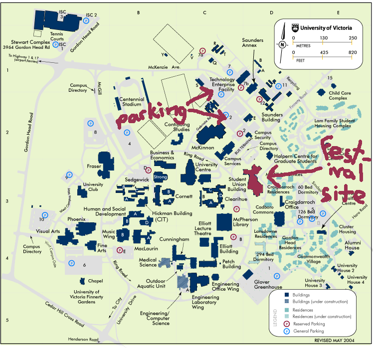

Driving
Bus / Train
Border Information
The festival will take place in the Michele Pujol Room in the Student Union Building (SUB) on the University of Victoria campus, in beautiful Victoria, BC.
Victoria is easy to get to... as long as you like multi-modal transportation. Situated on Vancouver Island (near Vancouver, which is not on the Island, confusingly enough), you will have to either fly or take a ferry of some sort to get here. Though driving is the most convenient, Victoria has a decent transit system for getting around and it is easy to get to by bus (at least from Vancouver).
For general information on all ferries to Victoria, see this page:
http://www.city.victoria.bc.ca/visitors/about_trans.shtml#ferry
Here is a map of UVic campus, which may prove very helpful in finding the SUB: 
From Downtown Victoria
Just in case you live in Victoria and don't know how to get to the SUB at UVic, here's how.
From downtown, Follow Fort Street up the hill out of town. Continue on as it becomes a 2-way street; then turn left on Foul Bay Road. Stay on Foul Bay Rd as it turns into Henderson Road (you may not even notice when this happens, just stay on the same street, you can't go wrong) and gets you onto the UVic campus - you'll pass the UVic sign on the right. Follow the road as it makes a sharp right to turn into Ring Road. This road circles around campus and soon you'll pass the SUB on your right. Keep going past the SUB (unless you're lucky enough to get a parking spot right on Ring Road in from of the SUB), don't take the turn to the right, pass the gym on your right and then turn right onto a little side street. Past the gym, turn right to get into parking lot 2 or left to get into 3. Follow the directions below to get from the parking lots back to the SUB.
From Vancouver
Take the 99 south towards Seattle. Just after the George Massey tunnel under the Fraser River, take the exit for Highway #17, signed for "ferries" and "Victoria via ferries". After about five or 10 minutes, you'll hit the ferry terminal. Get into one of the lineups marked "Victoria". The ferry takes about 1 hour and 35 minutes.
After you get off the ferry, follow the highway (still # 17) almost all the way into town. Take the McKenzie Avenue turnoff (also signed for "University of Victoria") and turn left (East). Follow McKenzie, eventually you will cross Gordon Head Road and see the sign on your right welcoming you to the UVic campus. Stay in the left lane to proceed towards the SUB. After you pass the stadium on your right the next two turns to the right will get you to parking lots 2 and 3, either of these should have lots of space on weekends. In the parking lots, you will find yourself behind the gym and bookstore buildings.
Go towards the bus exchange, next to the bookstore, and you will see the SUB across the road on the far side of the bus exchange. Go across the bus exchange (use the crosswalks, those busses will run you down otherwise), across the road at the crosswalk, and into the SUB. The Festival will be held in the Michel Pujol Room at the far (south) end; it is the largest room in the building so keep going down the hall until you see it.
From Seattle or Further South
Take the I5 north and go across the border, take Exit 28 for Highway #
17, signed for "Tsawwassen" and "Ferries". After taking the exit, keep left and
turn left at the traffic light onto Highway 17.
Once you're on Highway 17 heading for the ferries, follow directions as above
from Vancouver. If you're really sneaky you can cut the corner and take Highway
# 10 from the 99 to Highway 17 in Tsawwassen - guaranteed to save you about
10 seconds, or get you lost in darkest Ladner if you aren't carrying an experienced
navigator.
If you're feeling adventurous, try taking the ferry from Anacortes over to Sydney. This will be far slower than the BC ferry from Tsawwasen.
From Up-Island or the Sunshine Coast
(If you're on the Sunshine Coast, first take the ferry to Comox, or head to Vancouver and follow the above directions "From Vancouver"). Take the Island Highway south. On the way into Victoria, turn left on McKenzie Avenue. Stay on McKenzie underneath Highway # 17 (Pat Bay Highway) and follow the directions given in "From Vancouver", above, to get to campus.
From the Airport
Follow Willingdon Rd to the stop sign at McTavish and turn left (following everybody else). Immediately turn right onto Highway 17 and follow the directions as in From Vancouver into town.
Laidlaw runs busses from the length and breadth of Vancouver Island, most of the routes will get you to Victoria, some via Nanaimo. To take long-distance busses to Victoria from the mainland, take the bus to Vancouver and from the Vancouver main bus/train station take the PCL bus to Victoria; see directions "From Vancouver" below.
Bus destinations in U.S. and Canada:
Greyhound Bus lines 1-800-231-2222(US)
1-800-661-8747(Can)
For information on the bus to from Vancouver to Victoria, see:
http://www.pacificcoach.com/
For information on the bus to Victoria from up-island, see:
http://www.bctravel.com/transport.html
Laidlaw Coachlines 1-800-318 081
For information on the bus in Victoria, see:
http://www.bctransit.com/regions/vic/
From Vancouver
Take the PCL bus from the main bus/train station or any of its various pick-up points in Vancouver to downtown Victoria (cost: $25 CDN including the ferry). From downtown Victoria, the bus terminal is right across the street from a local bus (BC Transit) stop. From that stop, take the # 4 UVic bus right to campus, which puts you at the transit exchange across the road from the SUB. Follow the directions to the SUB in "Driving: From Vancouver" if you can't find the SUB from that point!
Using BC Transit Only (the Cheapest Possible Way, besides hitching or biking)
From Vancouver, take the # 601 to Ladner exchange. From there, take the # 640 to Tsawwassen ferry terminal. Walk on the ferry to Victoria. From the other side, take the # 70 to downtown Victoria. From downtown Victoria, take either the # 14 UVic or # 4 UVic bus (# 11 UVic via Uplands or # 7 works too, but is slower) to UVic campus, which puts you at the transit exchange across the road from the SUB. Follow the directions in "Driving: From Vancouver" if you can't find the SUB from that point. Give yourself lots of time, if you time the busses correctly this option will take about 3 1/2 to 4 hours from downtown Vancouver to UVic.
From Seattle
You can take the Victoria Clipper foot passenger ferry service between Seattle
and Victoria. This will get you from downtown Seattle to downtown Victoria in
a couple of hours. From the terminal in downtown Victoria, turn left (East)
along Belleville Street until you get to Douglas street. There is a BC Transit
stop just to your left up Douglas street, across the road. Take the # 4 UVic
bus from this stop to get you to the UVic campus.
Victoria Clipper 1-206-448-5000
http://www.victoriaclipper.com/
By Train
To get to Victoria by train, take Amtrak to Vancouver and then see directions "Bus: From Vancouver" above.
Via Rail runs a daily train from Courtenay on Vancouver Island to Victoria,
arriving at about 6pm each day. Then walk up Johnson Street to Douglas Street
and take either the # 14 or # 4 busses to campus. Check to make sure you are
getting on either bus in the right direction!
For more information on the trains, see:
http://www.viarail.ca/trains/en_trai_roch_vico.html
Border Information - for US travellers
The security situation at the border is ever-changing. If you are a juggler (which presumably you are, otherwise you wouldn't be reading this), be honest about all the equipment you are bringing and why you are bringing it; but do NOT say "I am a street performer" under any circumstances. If you are performing at the festival, tell them you won't be getting money for it. Bring your passport or at the least photo ID, birth certificate, and proof of residency (a utility bill, etc).
We have extensive experience going south to attend the Portland and Seattle festivals, but little experience going north: any US jugglers reading this who know more than we do, please email us and we'll update this page.
This page gives information for non-Canadians who will be performing at the show:
according to this website you will not need a work permit:
http://www.cic.gc.ca/english/work/exempt-1.html